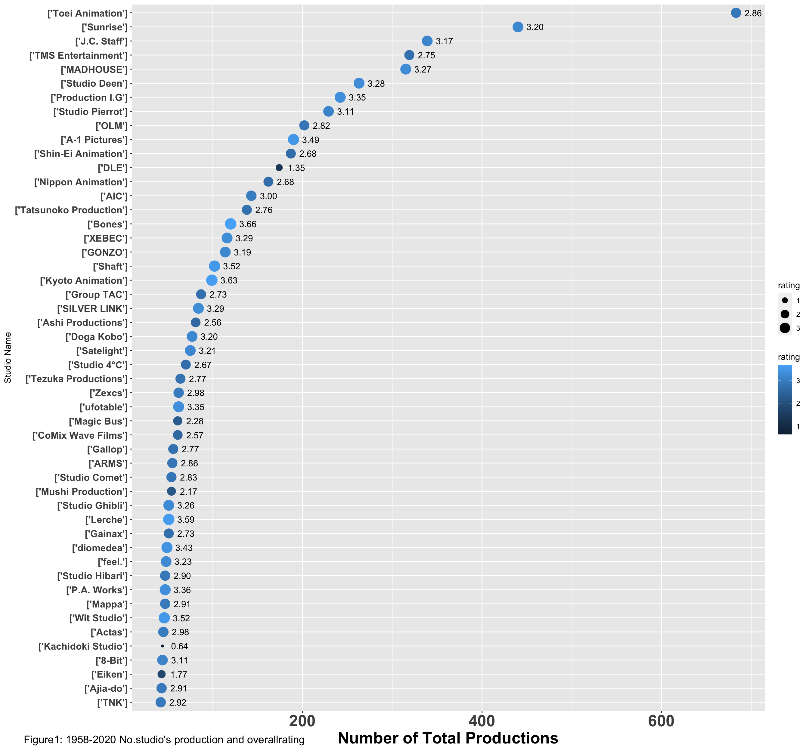

Part 2 Graphical look on the data
2.1 First ggplot of the data
First, I want to visually find out which is the most prolific studio
#Making a scatter plot
studio1959_2020 <-
ggplot(data = studiotop50, mapping = aes(x = production,
y = reorder (studios, production))) +
geom_point(aes(size = rating, colour = rating, check_overlap = TRUE)) +
#Rating label round it to 2 sig fig and bold
geom_text(aes(label = sprintf("%.2f",rating),hjust = -0.5),frontface="bold")
#Set up the theme, prevent label overlapping, and create tags.
plot <- studio1959_2020 + scale_x_discrete(guide = guide_axis(n.dodge = 5)) +
scale_x_continuous("Number of Total Productions") +
theme(axis.text.y = element_text(size = 12, face = "bold"),
axis.title.x = element_text(size = 20, face = "bold"),
axis.text.x = element_text(size = 20, face = "bold"),
plot.tag.position = c (0.2, 0.01))
print(plot + labs(y = "Studio Name", tag = "Figure1: 1958-2020 No.studio's production and overallrating"))
2.2 Second ggplot of the data
With second graph, I could visually find out the top average rating studio and its amount of work.
studio1959_2020c <-
ggplot(data = studiotop50, mapping = aes(x = rating,
y = reorder (studios, rating))) +
geom_point(aes(size = production, colour = rating, check_overlap = TRUE)) +
geom_text(aes(label = production),hjust = -0.5) +
geom_text(aes(label = sprintf("%.2f",rating),hjust = +1.5))
plot1 <- studio1959_2020c + scale_x_discrete(guide = guide_axis(n.dodge = 5)) +
scale_x_continuous("Average rating") +
theme(axis.text.y = element_text(size = 12, face = "bold"),
axis.title.x = element_text(size = 12, face = "bold"),
axis.text.x = element_text(size = 12, face = "bold"),
plot.tag.position = c (0.2, 0.01))
print(plot1+labs(y = "Studio Name",tag = "Figure2: 1958-2020 ranked studio's overallrating"))2.3 Further Interprtation
After having a general view of the data, I want to find out the best studios that their total amount of production is above lower quartile and the rating is above median. This could reflect the studio’s consistence of producing quality Anime.
#Find out the mean production without affected by outliers (number of production above 300)
studiotop50less <- studiotop50 %>% top_n(-45, studiotop50$production)
summary(studiotop50less$production)## Min. 1st Qu. Median Mean 3rd Qu. Max.
## 42.00 49.00 62.00 92.93 116.00 263.00#Find out the amount of studios that is above median rating
summary(studiotop50$rating)## Min. 1st Qu. Median Mean 3rd Qu. Max.
## 0.6368 2.7511 2.9774 2.9305 3.2745 3.6612sum(studiotop50$rating>=2.9774)## [1] 25#First, find out the studio that the rating is above median
beststudio <- studiotop50 %>% top_n(26, studiotop50$rating)
#Then, find out the studio that the production is above lower quartile
sum(beststudio$production>=49)## [1] 21#In the end, create the list of the best studio.
beststudio1 <- beststudio%>%top_n(21,beststudio$production)Visualise the best studios
best1959_2020 <-
ggplot(data = beststudio1, mapping = aes(x = rating,
y = reorder (studios, rating))) +
geom_point(aes(size = production, colour = rating, check_overlap = TRUE)) +
geom_text(aes(label = production),hjust = -0.5) +
geom_text(aes(label = sprintf("%.2f",rating),hjust = +1.5))
plot2 <- best1959_2020 + scale_x_discrete(guide = guide_axis(n.dodge = 1)) +
scale_x_continuous("Average rating") +
theme(axis.text.y = element_text(size = 12, face = "bold"),
axis.title.x = element_text(size = 12, face = "bold"),
axis.text.x = element_text(size = 12, face = "bold"),
plot.tag.position = c (0.2, 0.01))
print(plot2+labs(y = "Studio Name",tag = "Figure3: 1958-2020 Best studio's overallrating"))